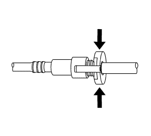
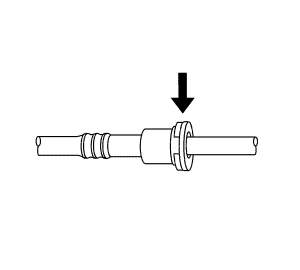

Servicio del adaptador de conexión rápida del collarín plástico
Procedimiento de desmontaje
Advertencia: Consulte Advertencia sobre la gasolina y sus vapores en la sección Prólogo.

Nota: En el vehículo se usan varios tipos de adaptadores de acoplamiento rápido de emisión de vapores y de collares de plástico de combustible.
| • | Apertura por apriete (3) |
| • | Retén de deslizamiento (4) |
- Despresurice el sistema de combustible. Consultar Descarga de la presión del combustible .
Advertencia: Consulte Advertencia, protección ocular en la sección Prólogo.
Precaución:Consulte Precaución, limpieza de la conexión del tubo flexible/tubo de emisión de vapor y combustible en la sección Prólogo.

- Limpie la suciedad que pueda haber en el acoplamiento rápido con aire comprimido.

- Este paso es válido sólo para los conectores tipo Bartholomew. Apriete las lengüetas de apertura del acoplamiento rápido de plástico.

- Este paso es válido sólo para los conectores tipo Q Release. Abra el acoplamiento apretando la lengüeta hacia el otro lado de la ranura del acoplamiento.

- Este paso es válido sólo para los conectores de apertura por apriete. Apriete en el punto indicado por las flechas en los dos lados del anillo de plástico que rodea el acoplamiento rápido.
Advertencia: Consulte Advertencia sobre liberar presión de combustible en la sección Prólogo.

- Este paso es válido sólo para los conectores de retén de deslizamiento. Abra el acoplamiento apretando sobre el lado de la lengüeta de apertura para presionarla un poco. Si la lengüeta no se mueve intente presionarla desde el lado contrario. La lengüeta sólo se moverá en una dirección.
- Separe la conexión.
Procedimiento de montaje
Advertencia: Consulte Precaución: herraje de tubo de combustible en la sección Prólogo.

- Aplique unas cuantas gotas de aceite limpio de motor en el extremo macho del acoplamiento.

- Empuje los dos lados del acoplamiento rápido juntándolos para que el retén encaje en su sitio.

- Una vez montado, tire de los dos lados del acoplamiento rápido para asegurase de que está bien cerrado.
| © Copyright Chevrolet. All rights reserved |